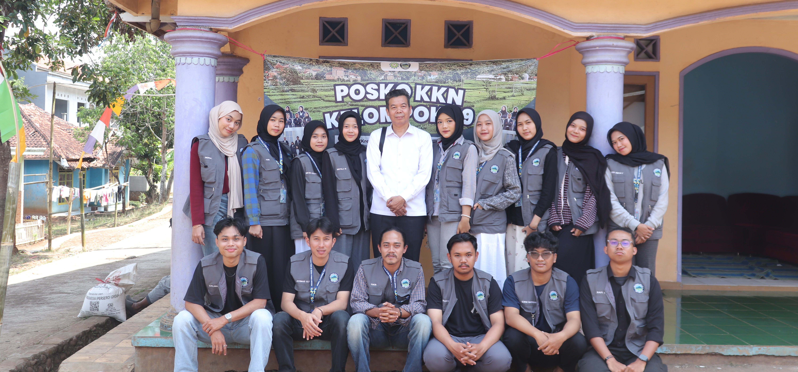
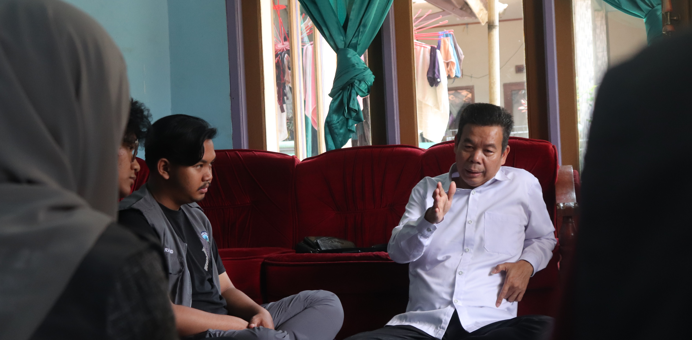
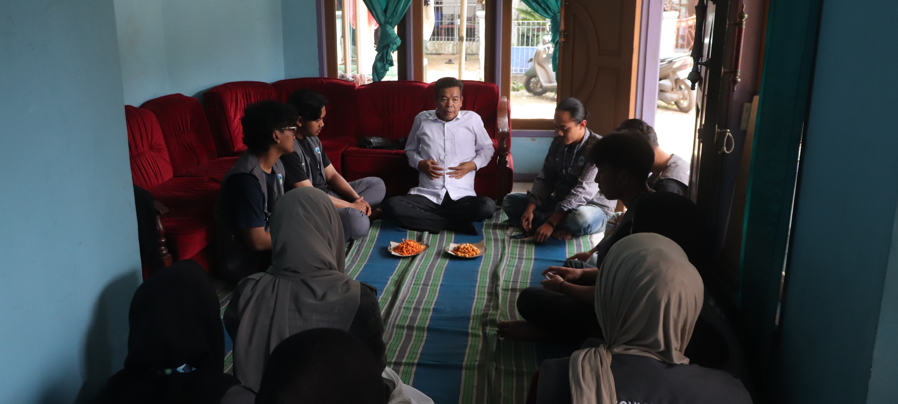

Sukalilah, 4 Agustus 2025 - Kuliah Kerja Nyata (KKN) Sisdamas UIN Bandung Kelompok 29 yang bertempat di Desa Sukalilah menerima kunjungan dari Dosen Pembimbing Lapangan (DPL), yakni Dr. Mohamad Jaenudin, S.Ag., M.Ag., M.Pd. Kunjungan ini dilaksanakan dalam rangka monitoring dan evaluasi kegiatan yang telah berlangsung selama dua minggu. Bertempat di posko KKN, kegiatan diawali dengan penyampaian laporan dari ketua pelaksana mengenai program-program yang telah dilaksanakan, potensi yang ditemukan, permasalahan di masyarakat, serta harapan-harapan yang disampaikan oleh warga Dusun 3.
Dalam sesi evaluasi, DPL bersama mahasiswa KKN membahas beberapa hal penting, mulai dari realisasi program, rencana kegiatan lanjutan, hingga temuan di lapangan. Salah satu fokus utama adalah menyusun program unggulan yang relevan dengan kondisi masyarakat dan dapat memberikan dampak berkelanjutan.

Hasil diskusi menunjukkan adanya beberapa bidang yang dapat menjadi fokus program. Pada bidang pendidikan, terdapat kebutuhan untuk meningkatkan motivasi masyarakat dalam melanjutkan pendidikan ke jenjang yang lebih tinggi. Sebagai saran, disampaikan gagasan untuk menghadirkan kegiatan seminar dengan melibatkan narasumber dari Dinas Pendidikan dan mengundang stakeholder desa.
Di bidang keagamaan, muncul temuan bahwa motivasi masyarakat dalam menghadiri pengajian masih relatif rendah. Untuk itu, disarankan adanya kegiatan keagamaan seperti tabligh akbar serta pembentukan organisasi Ikatan Remaja Masjid (IRMA) agar kegiatan kerohanian dapat dikelola secara lebih terstruktur dan berkelanjutan.
Adapun pada bidang sosial kemasyarakatan, permasalahan sampah menjadi perhatian utama. DPL mendorong agar mahasiswa memfasilitasi komunikasi antara masyarakat dan dinas terkait, khususnya Dinas Lingkungan Hidup, sehingga dapat ditemukan solusi pengelolaan sampah yang lebih efektif. Sebagai langkah kecil, diusulkan adanya gerakan menyediakan tong sampah di setiap rumah tangga untuk menumbuhkan kesadaran menjaga kebersihan lingkungan.

Melalui kegiatan monitoring dan evaluasi ini, mahasiswa mendapatkan arahan untuk memetakan program dengan lebih seimbang agar tidak menumpuk pada satu bidang saja. DPL juga menekankan pentingnya menghadirkan satu atau dua program unggulan yang realistis, memiliki nilai keberlanjutan, serta meninggalkan inspirasi bagi masyarakat. Selain itu, mahasiswa juga diarahkan untuk menghasilkan artikel ilmiah sebagai luaran akademik dari kegiatan KKN.
Dengan adanya arahan dan masukan dari DPL, diharapkan program KKN pada siklus berikutnya dapat berjalan lebih terarah, sesuai dengan kebutuhan masyarakat secara langsung, dan memberikan manfaat nyata bagi Dusun 3 Desa Sukalilah.